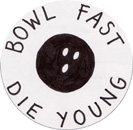

|
 |
 |
 |
| "Guinea
Pig" by Esme Bourne, aged 7, from Kent. She says
"I love my pet guinea pig". This design made the
judges smile, and they were impressed by the striking
simplicity of the image, the way the curved body
of the guinea pig follows the edge of the badge,
and the position of the carrot between earth and
sky. |
"Walk"
by Alice Palmer, aged 8 and three quarters, from
South London. She says "It's really important
for health to do exercise and most people like
to go everywhere in a car." This is everything
a badge should be: a strong simple message combined
with a bold design. The judges were particularly
impressed by the use of perspective shown by the
two feet walking towards the viewer. |
"Please
Cut Along The Dotted Line" by Stephanie Woods,
aged 14, from Dorset. She says "I had so many
things that I wanted to say in my badge, and so
many different ideas. It was a good way to include
a snippet of everything I had in mind, and make
a really colourful badge too!" This is a very
original design, with an interesting concept,
strong use of colour and great precision of lettering. |
The
first of the winning badges designed adults is
"Breakfast" by Mrs Veronica Lindsay-Addy from
London. She says "I enjoy breakfast every day,
though it is rarely as sumptuous as the full English
breakfast depicted…breakfast puts a smile on my
face as I set out for the day. If I ran the country,
eating breakfast would be a law. Not enough time
is never an excuse - make time!" This was an immediate
favourite with the judges because of the apt use
of the circular space of the badge for the round
plate, and loving attention to detail in the drawing
of each item. |
 |
 |
In
many cases the stories attached to the badges
were as important as the designs themselves, and
these range from the humorous to the cryptic to
the poignant. By far the most touching story was
sent in by Mai Osawa from Nagano in Japan. |
|
| "A
Burning Heart" by Christophe Devavry, a student
at Cranfield University. This combines a striking
image with a very personal message: "To thank
my fiancée for offering me her heart. Je t'aime
Julie!" |
"Save
Hopwas Woods" by Lorna Bushell, from Staffordshire.
This is a classic campaigning badge showing a
beautifully drawn image of Hopwas Woods, an ancient
woodland complete with bluebells, badgers, buzzards
and bats as well as a 16th century woodhouse.
This wood is under threat from quarrying. |
"I
wish I Could Tell You" She says "I love a man,
but I can't see him for good because he passed
away six months ago. I still love him and I always
tell him "I love you." When he was alive I just
told him "I like you" because I was too shy… I
miss him." |
Thank you to everyone who participated.
|
|
Here are a selection from the 1200 entries
we received.....
|
 |
 |
 |
 |
|
"Am
I shallow?" by Laura St Quinton
"I
felt guilty being more interested in badges
than archaeological treasures."
|
"Universal
Love" by Kathleen Lynch
"This
is the unspoken symbol for love. It can be understood
by anyone who feels it."
|
"Musical
Madness." by Katie Bowden, aged 11
"I
like music a lot and I play a musical instrument
in a band."
|
"Lee."
by Lee Morby, aged 11
"My
best friend is my tortoise, Eddy and I like
playing on my playstation and listening to my
stereo."
|
 |
 |
 |
 |
|
"Goal!."
by Hanna Carter, aged 11
"I'm
a big football fan and I support lots of teams
all over the world."
|
"The
Beach." by James Piddock, aged 11
"When
I feel sad it is the only place I like to be."
|
"Wave."
by Connor, aged 11
"I
like surfing and skateboarding."
|
"Funkey."
by Amelia Lean, aged 10
"I
thought I would need to unlock my imagination
so I drew my imagination key."
|
 |
 |
 |
 |
|
"I'm
not you." by Pablo Persico
"It's
a good message to all those who are interested
in power, money and all those senseless ambitions."
|
"Turn
over a new leaf." by Marc wingrove, aged
10
"It
is coming up to the end of the year and we start
over again on the first of January."
|
"Fairy
Queen." by Eva Lawrence, aged 6
"I
believe in faries."
|
"Rescue."
by Molly, aged 4
"I
was thinking of rescuing stories, to make up
for my pretend animals."
|
 |
 |
 |
 |
|
"Smile
on our faces." by Alison Hartill, aged
10
"I
like to draw faces that are not really true...and
I feel people are too serious."
|
"The
Eye" by Alex Bates, aged 11
"It
brings out me in it."
|
"Gothika."
by Daniel Frampton, aged 11
"I'm
a goth and I like dark colours."
|
"Eat
fruit and vegetables." by Erin Wilson,
aged 8
"If
everyone eats fruit and vegetables they will
be fit and healthy."
|
 |
 |
 |
 |
|
"Marchmont Street" by Gregory Cowan
"I like the scale and variety of this
street as a place for pedestrians."
|
"Hamsters
from Amsterdam are good fun." by Thibault
Milesi, aged 13
"I
am very fond of hamsters."
|
"Ban the midge." by Hannah Lovell, aged
10
"My
friend was going on holiday to Scotland and
I was thinking about a poem I wrote about midges."
|
"Alien
Invasion" by Ryan Smith, aged 11
"I
watch so many alien films."
|
|
|
|
|
|
'Ghost
Biker' by Joe Becci, age 14.
"I
like drawing skeletons and I like bikes."
|
'What
went wrong?' by Alba Ziegler-Bailey.
"Something
is happening but we don't know what it is."
|
By
Andrew Unsworth
[aged 7]
"I saw this cat who kept saying meow, he
gave me the idea for my badge." |
By
Gillian Lock
"I love to salsa and this badge represents
the passion of the dance."
|
|
|
|
|
By
Isabel de la Cruz, age 4
"It shows a happy face in pretty colours." |
'There's
no prob with Bob' by Jack Kane.
"JR
'Bob' Dobbs, the world's greatest salesman,
shows that you don't have to have an education
- or even be intelligent - to succeed. All you
need is luck - and he is the luckiest man in
the world."
|
By
Doreen Golding,
" As a Pearly Queen I wear badges from the
charities I support and the places I have been
to when fundraising." |
By
Edgar Simmons
"This
is a cartoon character I invented."
|
|
|
|
|
'Friends'
by Jenny Richards, age 7
"Friends are fun, friends are fab, and they
cheer us up when we are sad."
|
'Hassle'
by Hanna Berggren.
"Some
people seem to attract strange things. I am
one of them. Strange people, strange situations
and problems come to me whenever I try to avoid
them."
|
'Rainbow
Flower' by Millie Bourne, age 7.
"I have lots of pretty flowers in my garden." |
'Save
Cats' by Kirsty Richards, age 10.
"Cats are getting bought for people when
they are kittens then when they get too difficult
to look after they get thrown onto the street." |
|
 |
|
|
'Scramble'
by Kate Terry, age 7.
"I have a broody hen called Scramble who
is sitting on her eggs."
|
By
Stephen Ruscoe,
"It symbolises my life." |
'Stag
Beetles are Great' by Gloria Dawson.
"I genuinely feel that people have a really
negative view of stag beetles as vicious, bitey
insects, due to their big antlers, which they
only use for mating rituals. I think they're beautiful,
and one of the reasons they are endangered is
that people often kill them." |
'Cool
!' by Zoe Butterworth,
age 10.
"I love colours and patterns, swirls, spots
and stripes." |
|
|
|
|
'Eva
badge' by Eva Butterworth, age 8.
"It says E and that is the beginning of my
name." |
'I
love football !' by Kit Butterworth, age 5.
"I like football." |
'Peace Worldwide' by Yasemin Sema, age 14
"I wanted to represent peace. The different
coloured hands represent different religions and
they are in a heart to say we should love and
respect each others' nationalities. The blue border
with the green islands is meant to be the world." |
'Sweet
Sunset' by Daisy Quinn, age 9.
"I think sunsets are beautiful."
|
|
|
 |
|
|
'Lost
Human' by Giles Whitehead.
"I
was lost for ideas; I was thinking of those
posters that people put up when they have lost
a precious pet and applied the same principle
to the idea of lost people - psychologically
or otherwise."
|
by
Sussanah Chan.
"I watch far too much football in the evenings
- due to my partner being over-interested. I
say switch it off !!!"
|
By
Kate Madley,
" Everyone loves to bowl...it reminds me
of good times with good friends." |
By
Ashley Pratts, aged 7,
" I am funny." |
|
|
|
|
|
'Who
are you expecting to save the world?' by Beverley
Chipp.
"It's
down to each and every one of us to make radical
changes in the way we live and what we consume,
and what we speak out against and what we turn
a blind eye to."
|
'How
to make fool elections' by Simone Damiani.
"I
hate all those stupid badges used before the
elections."
|
'Windmill
of the Sun' by Amy Taylor, age 9.
"On
the way to the British Museum I saw it and thought
it would be a nice picture to draw."
|
'Act'
by Keziah Roberts, age 14.
"I
really enjoy acting because it allows me to
be someone I'm not. I can get away from everything
that I am. This is important to me because I
don't want to be my usual self."
|
 |
 |
 |
 |
|
"Imagine."
by Maica Rebecho Ariza
"Another
world is possible...no more wars please!."
|
"Great
Smile." by Magdalana Sanchez Garcia
"
I would like all children to smile as she does."
|
"Vote
Georgia." by Georgia Coker, aged 10
"I
like being in charge and I would be if people
voted for me."
|
"Island
with a tree." by Fredrik Milesi, aged 8
"I
would like to live on an island where it is
warm and there is no school."
|